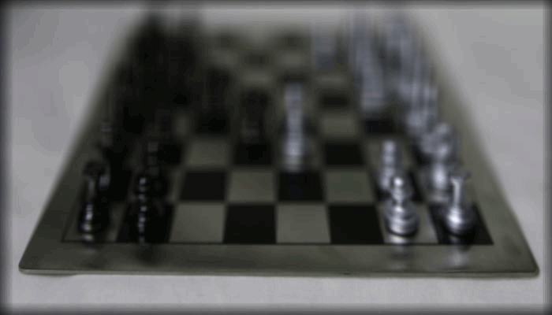
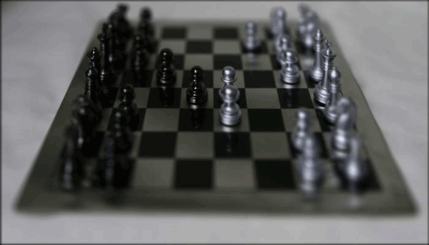

Project 6: Lightfield Camera
Jeffrey Zhang
CS194-26 | Professor A. Efros
Overview
In this project, I will implement concepts from Ng's paper on light fields. I will take images from Stanford's Light Field Archive that contain pictures of different objects taken from a grid of 17x17 cameras, giving us 289 different views of an object. Using some basic image shifts and averaging, we are able to produce varying depth refocusing and aperature size effects.
Depth Refocusing
To focus an image at different depths, we align each image such that the rays of light in each image align for a particular focus point. The images provided by stanford provide us with the coordinates of the subaperature view (position of camera) (u,v). For each image in our 17x17 grid, we subtract the average subaperature (u',v'). To alter the focus of the images, we translate each image by (alpha*(u-u'), alpha*(v-v')) for some range of alphas. For the chessboard image, I found that alpha works best from [-0.2, 0.7] (the image below is the result).
Initially, the above implementation takes a considerable amount of time (around 2 minutes) to align 289 images and combine them into a single image. However, given that we want to test the effect on a range of depths, 2 minutes per image is unreasonable. To speed this up, I reduced the width and height of my images by half from 1400x800 to 700x400. Additionally, using python's threading library, I was able to split the computation among the 4 threads in my computer. Computing all 36 images at different depths now only takes 2 minutes.
|  |
|---|
| 36 Images at Different Refocused Depths |
Aperature Adjustment
To capture the effect of adjusting aperature size, we simply change the images we average. Given a starting image, average the images r blocks away in the 17x17 grid. The larger radius of images averaged emulates a larger radius aperature, taking in more light, but losing focus on the peripherals. Conversely, the smaller radius of images averaged emulates a smaller radius aperature. At radius 0, we emulate a pinhole camera, which is focused at all parts of the image.
|  |
|---|
| 32 Images at Varying Aperature Sizes |
Summary
Given the data from a grid of images at different angles of an object, we can create really awesome effects with simple computations. Basic manipulation techniques such as image alignment and averaging can emulate the classic camera effects of changing focus and aperature sizes!
Bells and Whistles - Interactive Refocusing
To make a refocusing interactive, I used python's matplotlib to generate a figure that you can click around to readjust the focus! The algorithm uses the same equation from above (alpha*(u-u'), alpha*(v-v')) to calculate the displacement for each image in the 17x17 grid. After some testing, I found that alpha values of [-0.1,1.1] most accurately maps a click on the image to the correct refocused depth. Below is a short video demo.